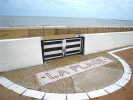
Châtelaillon, c'est loin, un peu plus que la Rochelle, pour moi, soit 520 km ! Mais les plages de l'Atlantique sont bien tentantes, le vent, la température et l'accueil en général bons. Départ de Paques, la circulation sera un peu chargée... Mais c'est parti pour la plage !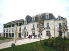
L'accueil a lieu dans un superbe hôtel particulier aménagé et agrandi en Maison de la Culture...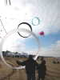
Sur la plage, dans le petit (on ne sait pourquoi...) terrain réservé aux monofils, les cerfs-volants se lancent, comme ce train de circoflex qui souffre un peu dans un vent assez fort.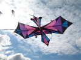
Ce grand insecte de bien 6 m d'envergure ne vole pas mal après quelques péripéties initiales, car il est un peu souple. Je crois que l'auteur s'appelle Christian Rolf, sans garantie...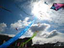
Ces deux immenses flammes, supportées par des trains de 3 pyrodeltas colorés sont impressionnantes !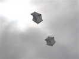
Et deux Rokkakus à poil long permettent de bien visualiser l'écoulement sur les surfaces : longitudinal en gros, mais bien transversal dans les poches latérales...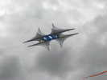
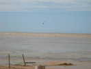
Les kite-surfers sont aussi de la fête. Mais avec la super-grande marée, ils sont obligés de patauger dans la boue pendant 800 m avant d'atteindre la mer, et ne seront guère visibles du public avant 17 h...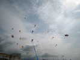
La journée avance, le temps n'est pas trop mauvais et il y a du vent... donc, bien que le festival ne commence qu'à 14 h, pas mal de monde, dont mon Albatros, se met progressivement en l'air...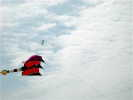
Bruno (je crois) a aussi mis en l'air ce micro-cerf-volant très courbé et qui vole parfaitement bien, ce qui est difficile pour un micro dans un vent soutenu.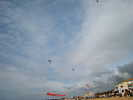
Jean-Claude et Chantal assurent une belle prestation de leur paire, les Aliens, avec leurs 2-lignes reliés par un même ruban !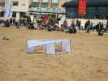
Les celtes se sont lancés dans la création de Madiot, ou du moins de dérivés plus ou moins exacts et utilisant des matériaux modernes. Celui-ci a en fait une caisse Hargraves et deux ailes portées chacune par deux bielles, disposition inhabituelle...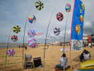
Loïk Chouaran a aussi fait des émules avec ses cannes de rotors, et une bannière du CVCF BREIZH !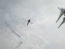
Bruno Cocandeau refait aussi voler son très beau Moustique découvert à Tours, d'environ 50 cm de haut, ce qui ne laisse pas beaucoup de surface portante !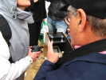
Il y a un concours photo, et de nombreux concurrents. André Le Besconte assisté de madame, scrute le bon fonctionnement de sa boîte TV avant de partir à la recherche de l'objectif gagnant !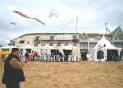
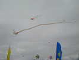
Ce cerf-volant avec une grande queue vole sur le terrain de démonstration, il faut bien ça...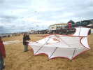
Au sol, tenu par son auteur, la machine est assez impressionnante, et il faut quelques précautions pour la mettre en oeuvre, elle arrache...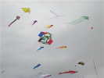
Il commence à y avoir beaucoup de monde en l'air. Cette belle box très colorée vole bien, malgré un vent assez fort qui la gonfle !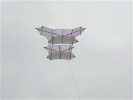
Un beau Cody blanc bien tendu vole impeccablement dans son vent préféré...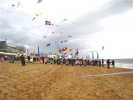
Le combat de Rokkakus est très couru : une trentaine de concurrents. Je ne brillerai pas, accroché dès le décollage et aussitôt planté.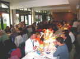
Samedi soir (samedi midi, c'était "libre"=pas fourni !), dîner à Beauséjour, avec nappes blanches, assiettes en dur, etc. ! On va dire que je râle toujours, mais je préfèrerais un peu plus de repas et un peu moins luxueux, on est venu pour voler, et on vole pour la plupart depuis le matin...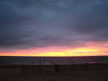
Mais le soleil se couche, on va pouvoir débuter le vol de nuit. Combinaisons blanches fournies comme d'hab, ça tient chaud et ça fait du spectacle !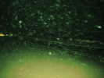
Il se met à pleuvoir, et pas qu'un peu ! Avec le flash, ça donne ça, et sans flash, rien !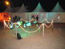
Je peux quand photographier la "Fontaine du village", bien éclairée, avec ses poissons....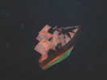
Ce grand bateau, très stable, est aussi à portée de flash...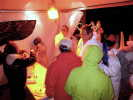
Après le vol de nuit, vin chaud pour tout le monde, très épicé, ça réchauffe bien, et on ne le boit pas par politesse !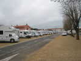
Bon, je vais me coucher, mais avant, je déménage vers le stade, plus calme que la Place où la sortie des boîtes de nuit du samedi soir réveille souvent les dormeurs vers 3 h du matin ! Au matin, je vois que je ne suis pas le seul à avoir pris cette précaution...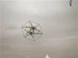
Au matin, il ne pleut plus, et le vent est un peu plus faible qu'hier ! Cette étoile double volera de justesse, les toiles humides un peu molles quand même...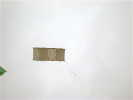
Bernard s'est lancé dans le bambou-coton, avec cette boîte diagonale dont les qualités de vol ne sont plus à démontrer !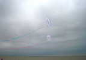
Des circoflex plus compacts, et dotés d'une queue, se mettent aussi de la partie, bien stables, évidemment...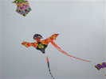
L'auteur du grand insecte du début a aussi réalisé sur le même principe cette sorte de Dragon menaçant...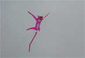
William Venant a sorti sa Panthère Rose qui vole très bien. Doteé d'un voile drapé, elle participera même au concours de création !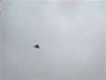
Bernard Giraud, comme d'habitude, est monté très haut (à la limite de mon zoom...) avec son delta à carreaux !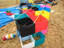
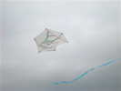
Notable aussi, ce joli rokkaku très calme et pacifique...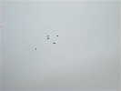
Zézé avait amené ses trains de cerfs-volants ovales à trous et ses poissons sur une structure voisine. Dans le même genre, plus haut , car les emmêlages avec des voisins sont mortels, cette grappe d'oiseaux genre chouettes de Raymond Chauchard...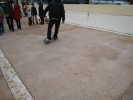
Original, sur la promenade, parmi les démonstrations, ce skate avec une roue à l'avant et une à l'arrière, qu'on vrille pour le piloter. L'intérêt, c'est qu'on peut, en zigzagant, se lancer sur le plat sans pédaler !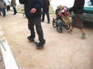
Notre glorieux commentateur a pratiqué aussi de ce "snake" qui possède à chaque bout un boggie orientable en tournant les pieds ! A l'aise, il continue à commenter tout en zigzagant entre les spectateurs !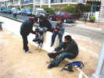
Toujours en démonstration, mais à essayer, les échasses à ressort qui permettent des pas de géants !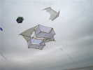
Dans le chapitre des Madiot, celui-ci, bien qu'en matériau moderne, reprend d'assez près la structure du brevet Madiot (voir entre autres la reprise du brevet Madiot dans la revue du CVCF, le Lucane N°106 de janvier 2004).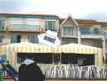
Celui de Raymond, d'une structure plus simple, a été pris dans une turbulence et a fini sur le toit d'une tente.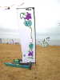
Peu de JdVs, aujourd'hui. Cette belle bannière Art Déco de l'organisation est ainsi mise en valeur !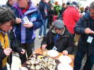
Les huîtres traditionnelles étaient jadis servies au matin sur la plage et les spectateurs étaient jaloux. Maintenant, elles sont en hors-d'oeuvre, sur la terrasse du Casino...Le déjeuner se tient dans la salle au premier étage du Casino... Abondant, fin et succulent, sans critique, sauf qu'il manque de places assises...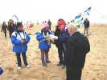
Christian Bécot a présidé au largage de bonbons suivant sa technique : une boîte suspendue au fil, retenue en haut par un crochet. On monte le tout, on court en travers pour feinter les petits malins, et on secoue un bon coup : le crochet se décroche et les bonbons s'éparpillent partout, pas de bagarres !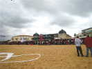
Ce dimanche après-midi, le public a été assez nombreux sur la promenade, devant le Casino...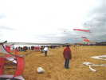
Il y avait aussi beaucoup de monde derrière les cervolistes, le meilleur endroit pour voir les cerfs-volants et surtout les figures des pilotables...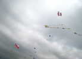
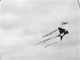
Cette simpliste hirondelle stylisée m'a aussi beaucoup plu. Peut-être une oeuvre de Bruno Cocandeau ?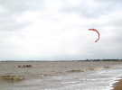
Les kiters peuvent maintenant naviguer très près de nous ! L'un d'eux, profitant d'un kayak de mer multiplace du CKC invente un nouveau sport : le kayak tracté par cerf-volant. Ca avance pas mal !